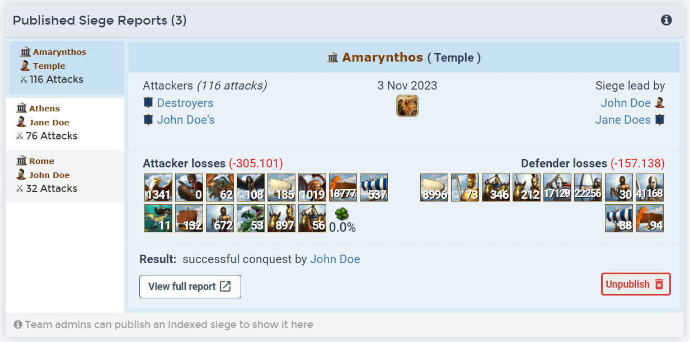
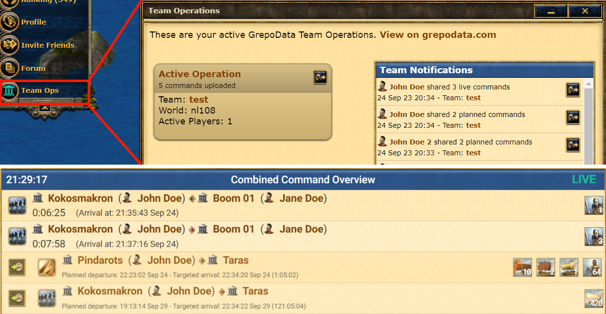
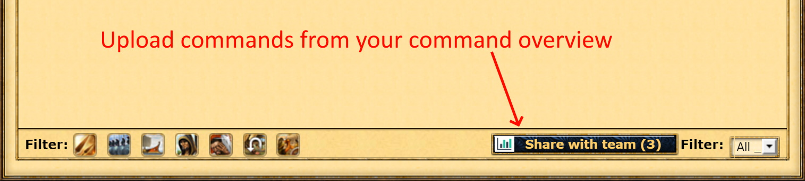
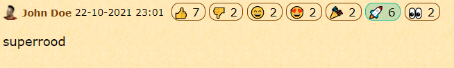

City Indexer Userscript Changelog
Full history (GitHub)
Note: You do not have to update the GrepoData userscript.
Your browser will automatically use the latest version.
Team owners and admins can now publish sieges. A published siege overview is visible to all grepodata users on the dialy scoreboard for that world (as shown below). The individual attacks are not made public. The team admins can always unpublish a siege to make it hidden again.

- We added a 'Team Ops' button to the game menu that shows your current active operations and recent notifications.
- We added a 'Share with team' button to the attack planner that allows users to upload planned commands to Team Operations.
- All team members will now get push notifications in-game when new commands are shared within the team.

We added a button the command overview that allows users to share their commands with their GrepoData teams. Team members can upload their commands and can browse a combined real-time command overview together with the entire team.

We added the option to import existing intel when you join or create a new team. If you have previously indexed some reports and join a new team on the same game world, you will find a popup message on the team overview. This popup allows you to import all existing intel to the new team. You can find your team overview by going to My teams on grepodata.com and selecting your new team.

Added forum reactions. If you have the userscript installed, you can leave reactions to posts on the in-game alliance forum. Your alliance members can see your reaction and you can see theirs, but only if they also use the userscript and are part of the same GrepoData team.
You can disable this feature in the settings.

Added a bugfix for town names in the support overview. Due to a bug in the game, the support overview shows the current town instead of the source town of your units. We added a function to our userscript that fixes this bug.
Fixed a bug that would cause the GrepoData dialog windows to open in a weird way.
Added a tooltip to spy reports in the intel viewer that shows how much silver was used.
Bugfix for return time on movements to own cities.